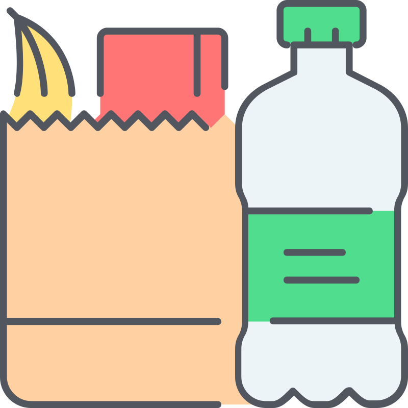

<main>
    <h3>Configuración de categorías</h3>
    <section>
        <article class="new__item" (click)="orderCloseormularyPopUp = true">
            <i class="fas fa-plus"></i> Crear nuevo
        </article>
        <ng-container *ngFor="let item of [1,2,3,4,5,6,7,8,9,10,11]">
            <article>
                <header>
                    
                    <div class="details">
                        <h3>Gustitos <span><i (click)="showMaskAsctions()" class="fas fa-ellipsis-v"></i></span></h3>
                        <span><i class="fas fa-circle"></i> Active</span>
                    </div>
                </header>
                <footer>
                    <div class="dropdown">
                        <span>No agrupado</span>
                        <span><i class="fas fa-chevron-down"></i></span>
                    </div>
                </footer>

                <div class="article__mask__actions" [ngClass]="{'show__block': flagShowMaskAsctions}">
                    <i class="far fa-trash-alt"></i>
                    <i (click)="orderCloseormularyPopUp = true" class="far fa-edit"></i>
                    <i (click)="showMaskAsctions()" class="fas fa-times"></i>
                </div>
            </article>
        </ng-container>
    </section>

    <app-category-form *ngIf="orderCloseormularyPopUp" (sendOrderCloseFormularyPopUp)="receiveOrderCloseFormularyPopUp()"></app-category-form>
</main>
